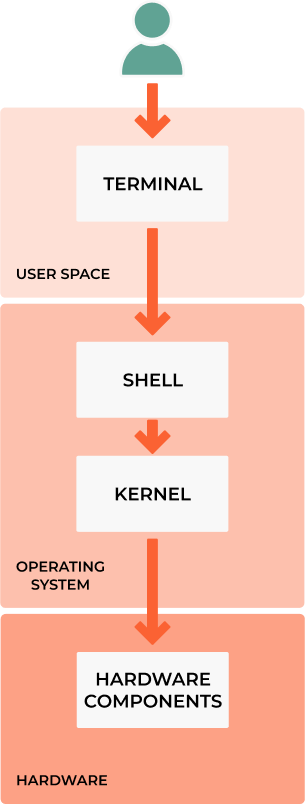

3.0 Introduction
Abstract
Shell - is a macro processor(interpreter) which allows for interactive or non-interactive command execution.
Scripting - allows for an automatic command execution that would otherwise be executed interactively one by one.
Terminals - also known as command lines, CLI or consoles, allow us to accomplish and automate tasks on a computer without the use of a graphical user interface. Using a terminal allows us to send simple text commands to our computer to do things like navigate through a directory or copy a file, and form the basis for many more complex automation and programming skills.
Types of shells(interpreters):
sh- Bourne Shell: The Bourne shell is a shell command-line interpreter for computer operating systems.Bash- is a command language interpreter. It is widely available on various operating systems and is a default command interpreter on most GNU/Linux systems. The name is an acronym for the ‘Bourne-Again SHell’.ZSH, also called the Z shell, is an extended version of the Bourne Shell (sh), with plenty of new features, and support for plugins and themes. Since it’s based on the same shell as Bash, ZSH has many of the same features, and switching over is a breeze.dash- Dash stands for Debian Almquist Shell. It is a POSIX-compliant implementation of Bourne Shell. It replaces the /bin/sh in default scripts and provides better execution speed while consuming fewer resources.rbash- The Restricted Shell is a Linux Shell that restricts some of the features of the bash shell, and is very clear from the name. The restriction is well implemented for the command as well as the script running in a restricted shell. It provides an additional layer of security to bash shell in Linux.tmux- tmux is an open-source terminal multiplexer for Unix-like operating systems. It allows multiple terminal sessions to be accessed simultaneously in a single window. It is useful for running more than one command-line program at the same time.screen- With the Linux screen command, you can push running terminal applications to the background and pull them forward when you want to see them. It also supports split-screen displays and works over SSH connections, even after you disconnect and reconnect!
How to find what shells are available on the Linux machine:
linux_user@linux_machine:~/sandbox$ cat /etc/shells
/etc/shells: valid login shells
/bin/sh
/bin/bash
/usr/bin/bash
/bin/rbash
/usr/bin/rbash
/bin/dash
/usr/bin/dash
/usr/bin/tmux
/usr/bin/screen
Find out what shell is currently running echo $SHELL
What are the differences between the shells?
sh- is the original Unix shell, developed by Stephen Bourne at AT&T. It became the standard shell on Linux and other Unix systems. It is an sh-compatible shell that incorporates useful features from the Korn shell (ksh) and C shell (csh). It offers functional improvements over sh for both programming and interactive use. It has features to aid interactive use, such as command line editing, command history and tab completion.bash- is the GNU Project’s shell. It is an sh-compatible shell that incorporates useful features from the Korn shell (ksh) and C shell (csh). It offers functional improvements over sh for both programming and interactive use. It has features to aid interactive use, such as command line editing, command history and tab completion.zsh- is a shell designed for interactive use, although it is also a powerful scripting language. Many of the useful features of bash, ksh, and tcsh were incorporated into zsh; many original features were added.dash- is a minimal implementation of sh that aims to be POSIX compliant. It only supports features required by the POSIX standard. It is much faster than bash but does not have interactive features.rbash- is a restricted version of bash that can be used to set up an environment more controlled than the standard shell. It behaves identically to bash with the exception that the following are disallowed or not performed:changing directories with cd
setting or unsetting the values of SHELL, PATH, ENV, or BASH_ENV
specifying command names containing /
specifying a file name containing a / as an argument to the . builtin command
specifying a filename containing a slash as an argument to the -p option to the hash builtin command
importing function definitions from the shell environment at startup
parsing the value of SHELLOPTS from the shell environment at startup
redirecting output using the >, >|, <>, >&, &>, and >> redirection operators
using the exec builtin command to replace the shell with another command
adding or deleting builtin commands with the -f and -d options to the enable builtin command
using the enable builtin command to enable disabled shell builtins
specifying the -p option to the command builtin command
turning off restricted mode with set +r or set +o restricted.
tmux- is a terminal multiplexer. It allows you to access a tmux terminal session from multiple terminals. It is useful for running more than one command-line program at the same time. It is also useful for disconnecting from a computer but keeping a shell session active, which prevents programs from being interrupted if the network connection is lost.screen- is a terminal multiplexer. It allows you to access a screen terminal session from multiple terminals. It is useful for running more than one command-line program at the same time. It is also useful for disconnecting from a computer but keeping a shell session active, which prevents programs from being interrupted if the network connection is lost.
What is POSIX Compliant?
POSIX is a family of standards specified by the IEEE for maintaining compatibility between operating systems. POSIX defines the application programming interface (API), along with command line shells and utility interfaces, for software compatibility with variants of Unix and other operating systems.
What is IEEE?
The Institute of Electrical and Electronics Engineers (IEEE) is a professional association for electronic engineering and electrical engineering (and associated disciplines) with its corporate office in New York City and its operations center in Piscataway, New Jersey. It was formed in 1963 from the amalgamation of the American Institute of Electrical Engineers and the Institute of Radio Engineers.
What are POSIX standards?
POSIX standards are a set of IEEE standards that define the API, shell, and utility interfaces for software compatibility with variants of Unix and other operating systems. The POSIX standards are designed to maintain compatibility between operating systems and to provide a common programming interface for software developers.
POSIX-compliant operating systems include:
AIX - IBM
z/OS - IBM
HP-UX - Hewlett-Packard
Solaris - Oracle
BSD - Berkeley Software Distribution
macOS - Apple
Linux - Linux Foundation
POSIX-compliant shells include:
sh - Bourne Shell
bash - Bourne Again Shell
ksh - Korn Shell
csh - C Shell
tcsh - TENEX C Shell
zsh - Z Shell
What is scripting?
All scripting languages are programming languages. The scripting language is a language where instructions are written for a runtime environment. They do not require the compilation step and are rather interpreted. It brings new functions to applications and glues complex systems together. A scripting language is a programming language designed for integrating and communicating with other programming languages.
There are many scripting languages some of which are discussed below:
bash: It is a scripting language to work in the Linux interface. It is a lot easier to use bash to create scripts than other programming languages. It describes the tools to use and code in the command line and create useful reusable scripts and conserve documentation for other people to work with.
Python: It is easy, free, and open source. It supports procedure-oriented programming and object-oriented programming. Python is an interpreted language with dynamic semantics and huge lines of code that are scripted and is currently the most hyped language among developers.
JavaScript: originally a very small, highly domain-specific language, limited to running within a web browser to dynamically modify the web page being shown, that later developed into a widely portable general-purpose programming language.
Ruby: Ruby’s flexibility has allowed developers to create innovative software. It is a scripting language that is great for web development.
Perl: a text-processing language that later developed into a general-purpose language and is also used as an extension language for various applications.
Note
The most important factor when picking a language is how familiar are the developers that will maintain the code! There is no best language, there is only the best language for the job.
When to use scripting?
only for small utilities or wrappers (a wrapper is a small script that calls other applications)
if you need performance - never use
bashorpythonlook intogoorrustif your script goes for more than 100 lines, and the complexity starts to be problematic, look into migrating that into another language.